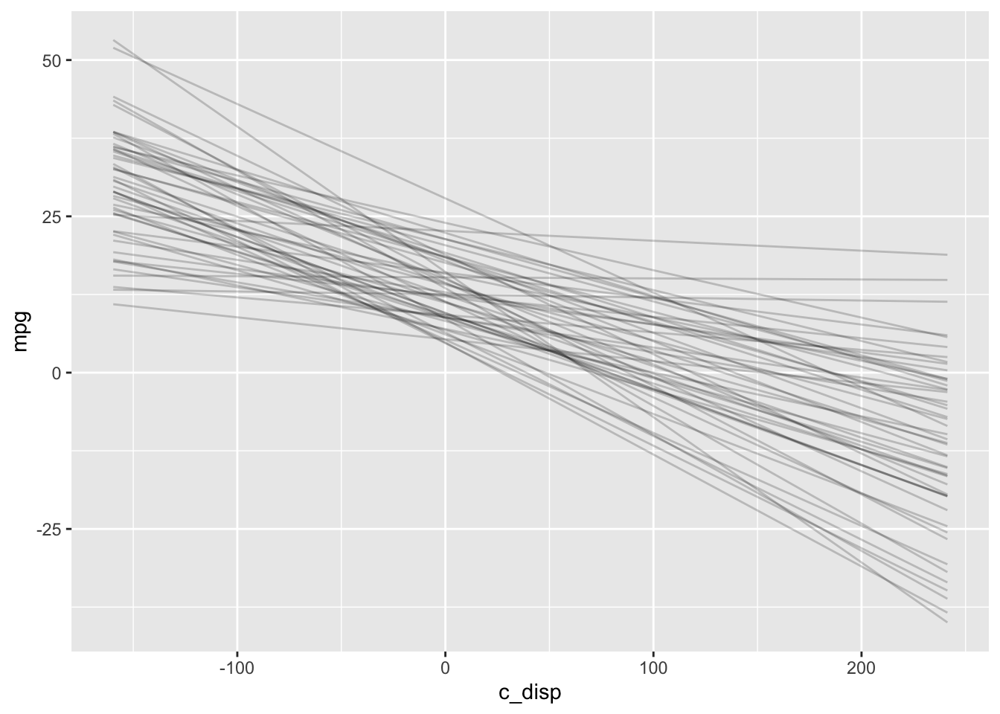

Chapter 3 rethinking
3.1 Resources
3.2 Description
Statistical Rethinking was one of the first books I read on Bayesian methods, and I highly recommend it. McElreath uses a lot of practical examples which I found very helpful. All of the problems in the book are done with the rethinking package which uses the familiar formula syntax for defining models. However, unlike rstanarm the functions are not close mirrors of familiar frequentist functions. Another difference from rstanarm is you must specify all priors–there are no defaults.
The rethinking package has some nice extras. One is the stancode function which returns the stan code generated for the model. This is a great way to start getting familiar with stan syntax! Second map2stan returns an object that contains a stanfit object which you can access with the @stanfit accessor. Most of the bayesplot and shinystan functions work with that stanfit object. Alternatively, the rethinking package includes its own functions that work directly on the returned map2stan object (see the book for details).
I ran into some difficulty with the semi-parametric regression (3.5), but aside from that the rethinking package is also a very good option for getting started.
3.3 Environment Setup
3.4 Linear Model
3.4.1 Define Model
The rethinking package does not have default priors so I need to explicitly choose them. Again I’ll use the following model:
\[\begin{align*} mpg &\sim Normal(\mu, \sigma^2) \\ \mu &= a + b*disp \\ a &\sim Normal(13.2, 5.3^2) \\ b &\sim Normal(-0.1, 0.05^2) \\ \sigma &\sim Exponential(1) \end{align*}\]
# Note the sign change for mu and b, this seems to be a quirk
# of map2stan that it didn't like b ~ dnorm(-0.1, 0.05)
f <- alist(
mpg ~ dnorm(mu, sigma),
mu <- a - b * disp,
a ~ dnorm(13.2, 5.3),
b ~ dnorm(0.1, 0.05),
sigma ~ dexp(1)
)
# Note the default number of chains = 1, so I'm explicitly setting to available cores
mdl1 <- map2stan(f,mtcars, chains=parallel::detectCores())## Trying to compile a simple C file## Computing WAICThe automatically generated stan code:
## //2020-12-25 20:22:53
## data{
## int<lower=1> N;
## real mpg[N];
## real disp[N];
## }
## parameters{
## real a;
## real b;
## real<lower=0> sigma;
## }
## model{
## vector[N] mu;
## sigma ~ exponential( 1 );
## b ~ normal( 0.1 , 0.05 );
## a ~ normal( 13.2 , 5.3 );
## for ( i in 1:N ) {
## mu[i] = a - b * disp[i];
## }
## mpg ~ normal( mu , sigma );
## }
## generated quantities{
## vector[N] mu;
## for ( i in 1:N ) {
## mu[i] = a - b * disp[i];
## }
## }3.4.2 Prior Predictive Distribution
# Plot prior predictive distribution
N <- 50
prior_samples <- as.data.frame(extract.prior(mdl1, n=N))
D <- seq(min(mtcars$disp), max(mtcars$disp), length.out = N)
res <- as.data.frame(apply(prior_samples, 1, function(x) x[1] - x[2] * (D-mean(mtcars$disp)))) %>%
mutate(disp = D) %>%
pivot_longer(cols=c(-"disp"), names_to="iter")
res %>%
ggplot() +
geom_line(aes(x=disp, y=value, group=iter), alpha=0.2) +
labs(x="disp", y="prior predictive mpg")
3.4.3 Diagnostics


The precis function displays n_eff and \(\widehat{R}\).
## mean sd 2.5% 97.5% n_eff Rhat4
## a 28.88390 1.179811 26.44239 31.14778 1545 1.002
## b 0.03894 0.004514 0.02977 0.04761 1624 1.001
## sigma 3.21343 0.403748 2.50514 4.12205 1769 1.0013.4.4 Posterior Distribution
The precis function above also displays both the posterior point estimate and credible interval.
3.4.5 Posterior Predictive Distribution
Finally, I’ll check the posterior predictive distribution. The rethinking package includes the postcheck function which displays a plot for posterior predictive checking.

Personally, I find the postcheck plot hard to use because I can never remember what the different symbols represent. Instead, I’ll plot the expectation of the posterior predictive distribution (i.e., \(\mu\)) like I did with rstanarm . The sim function draws samples from the posterior predictive distribution, and the link function returns the linear predictor, possibly transformed by the inverse-link function. In this case, the model is a Gaussian likelihood with an identity link function, so the sim and link functions return identical results.
newdata <- data.frame(disp=seq(min(mtcars$disp), max(mtcars$disp)))
y_rep <- as.data.frame(t(link(mdl1, data=newdata, n=50))) %>%
cbind(newdata) %>%
pivot_longer(-disp, names_to="draw", values_to="mpg")
y_rep %>%
ggplot(aes(x=disp, y=mpg)) +
geom_line(aes(group=draw), alpha=0.2) +
geom_point(data = mtcars) 
3.5 Semi-parametric Model
3.5.1 Define Model
Setting up the semi-parametric model is a bit more work in the rethinking package. First, I explicitly create the splines. The component splines are plotted below.
library(splines)
num_knots <- 4 # number of interior knots
knot_list <- quantile(mtcars$disp, probs=seq(0,1,length.out = num_knots))
B <- bs(mtcars$disp, knots=knot_list[-c(1,num_knots)], intercept=TRUE)
df1 <- cbind(disp=mtcars$disp, B) %>%
as.data.frame() %>%
pivot_longer(-disp, names_to="spline", values_to="val")
# Plot at smaller intervals so curves are smooth
N<- 50
D <- seq(min(mtcars$disp), max(mtcars$disp), length.out = N)
B_plot <- bs(D,
knots=knot_list[-c(1,num_knots)],
intercept=TRUE)
df2 <- cbind(disp=D, B_plot) %>%
as.data.frame() %>%
pivot_longer(-disp, names_to="spline", values_to="val")
ggplot(mapping=aes(x=disp, y=val, color=spline)) +
geom_point(data=df1) +
geom_line(data=df2, linetype="dashed")
Then I define the model with the splines. I wasn’t able to get this model to work with either the map2stan or ulam functions, so I used quap instead which fits a quadratic approximation.
3.5.2 Diagnostics
Since MCMC was not used to fit the model, there are no chain diagnostics to examine.
3.5.3 Posterior Distribution
I can still use the precis function to look at the posterior distribution, although there’s really no intuitive interpretation for the spline weights.
## mean sd 5.5% 94.5%
## w[1] -12.0969 2.2958 -15.766 -8.4279
## w[2] -4.3255 2.5531 -8.406 -0.2451
## w[3] 0.4836 2.7405 -3.896 4.8636
## w[4] 5.8888 2.8873 1.274 10.5034
## w[5] 2.1741 2.8840 -2.435 6.7832
## w[6] 9.0515 2.3915 5.229 12.8736
## a 20.1951 2.0329 16.946 23.4440
## sigma 1.9638 0.2397 1.581 2.34693.5.4 Posterior Predictive Distribution
Finally, the posterior predictive distribution and LOESS for comparison:
mu <- link(mdl2)
mu_mean <- as.data.frame(apply(mu, 2, mean)) %>%
mutate(disp=mtcars$disp)
colnames(mu_mean) <- c("mpg_ppd", "disp")
mu_PI <- as.data.frame(t(apply(mu,2,PI,0.95))) %>%
mutate(disp=mtcars$disp)
colnames(mu_PI) <- c("lwr", "upr", "disp")
ggplot() +
geom_point(data=mtcars, aes(x=disp, y=mpg)) +
geom_line(data=mu_mean, aes(x=disp, y=mpg_ppd), color="blue") +
geom_ribbon(data=mu_PI, aes(x=disp, ymin=lwr, ymax=upr), alpha=0.2) +
labs(title="GAM")
ggplot(mapping=aes(x=disp, y=mpg-mean(mpg)),
data=mtcars) +
geom_point()+
stat_smooth(method="loess",
level=0.95) +
labs(title="LOESS")

3.6 Session Info
## R version 4.0.3 (2020-10-10)
## Platform: x86_64-apple-darwin17.0 (64-bit)
## Running under: macOS Big Sur 10.16
##
## Matrix products: default
## BLAS: /Library/Frameworks/R.framework/Versions/4.0/Resources/lib/libRblas.dylib
## LAPACK: /Library/Frameworks/R.framework/Versions/4.0/Resources/lib/libRlapack.dylib
##
## locale:
## [1] en_US.UTF-8/en_US.UTF-8/en_US.UTF-8/C/en_US.UTF-8/en_US.UTF-8
##
## attached base packages:
## [1] splines parallel stats graphics grDevices datasets utils
## [8] methods base
##
## other attached packages:
## [1] bayesplot_1.7.2 rethinking_2.13 rstan_2.21.2
## [4] StanHeaders_2.21.0-6 forcats_0.5.0 stringr_1.4.0
## [7] dplyr_1.0.2 purrr_0.3.4 readr_1.4.0
## [10] tidyr_1.1.2 tibble_3.0.4 ggplot2_3.3.2
## [13] tidyverse_1.3.0
##
## loaded via a namespace (and not attached):
## [1] nlme_3.1-149 matrixStats_0.57.0 fs_1.5.0 lubridate_1.7.9.2
## [5] httr_1.4.2 tools_4.0.3 backports_1.2.0 R6_2.5.0
## [9] mgcv_1.8-33 DBI_1.1.0 colorspace_2.0-0 withr_2.3.0
## [13] tidyselect_1.1.0 gridExtra_2.3 prettyunits_1.1.1 processx_3.4.5
## [17] curl_4.3 compiler_4.0.3 cli_2.2.0 rvest_0.3.6
## [21] xml2_1.3.2 labeling_0.4.2 bookdown_0.21 scales_1.1.1
## [25] mvtnorm_1.1-1 ggridges_0.5.2 callr_3.5.1 digest_0.6.27
## [29] rmarkdown_2.5 pkgconfig_2.0.3 htmltools_0.5.0 dbplyr_2.0.0
## [33] rlang_0.4.9 readxl_1.3.1 rstudioapi_0.13 shape_1.4.5
## [37] generics_0.1.0 farver_2.0.3 jsonlite_1.7.1 inline_0.3.17
## [41] magrittr_2.0.1 loo_2.3.1 Matrix_1.2-18 Rcpp_1.0.5
## [45] munsell_0.5.0 fansi_0.4.1 lifecycle_0.2.0 stringi_1.5.3
## [49] yaml_2.2.1 MASS_7.3-53 pkgbuild_1.1.0 plyr_1.8.6
## [53] grid_4.0.3 crayon_1.3.4 lattice_0.20-41 haven_2.3.1
## [57] hms_0.5.3 knitr_1.30 ps_1.4.0 pillar_1.4.7
## [61] reshape2_1.4.4 codetools_0.2-16 stats4_4.0.3 reprex_0.3.0
## [65] glue_1.4.2 evaluate_0.14 V8_3.4.0 renv_0.12.0
## [69] RcppParallel_5.0.2 modelr_0.1.8 vctrs_0.3.5 cellranger_1.1.0
## [73] gtable_0.3.0 assertthat_0.2.1 xfun_0.19 broom_0.7.2
## [77] coda_0.19-4 ellipsis_0.3.1